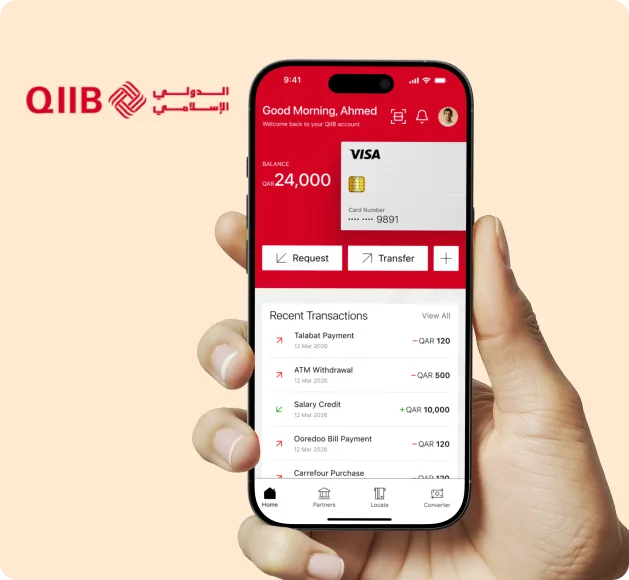
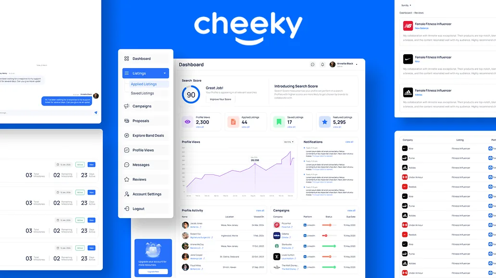
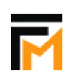
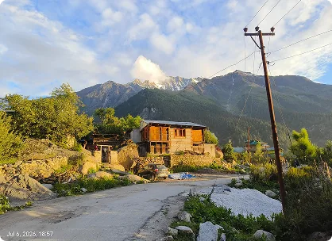
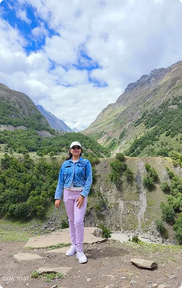

Healthcare · Case study
Five products, one diagnostic system.
Patient app, doctor tools, website and admin dashboard for a diagnostics chain — four user types, one connected booking-to-report flow.
Read case study

I design products that feel simple, even when they are not — bringing together user research, interaction design, design systems and usability testing across healthcare, wellness, mobility and fintech.
Patient app, doctor tools, website and admin dashboard for a diagnostics chain — four user types, one connected booking-to-report flow.
Read case studyTimetable, video library, meditation, recipes and shop in a single yoga app — with a four-screen onboarding into guided sessions and progress tracking.
Read case study
Booking for Malta, where most riders are tourists: the fare up front, a live map of nearby taxis, and a flow short enough to complete on the street.
Read case study
QIIB’s mobile banking welcome, opening onto accounts, partner services, an ATM locator and a live currency converter.
Read case study
Discovery, messaging, payments and campaign tracking for influencer–brand collaborations, in one platform.
View deck ↗
Research-led product experiences for a fast-moving startup, from first interview to shipped interface.

Owned interface design for web and mobile products, backed by a reusable component library.
Turned client briefs into interactive prototypes that made design decisions easy to review.
Client-facing implementation work that became the foundation for a move into UX design.
A few photographs from outside the design tools — mountains, early light and moments worth keeping.





Four years designing products end to end, after two in client-facing implementation. I’m looking for a full-time team that cares about research as much as pixels. Pick a card on the desk, or start here.